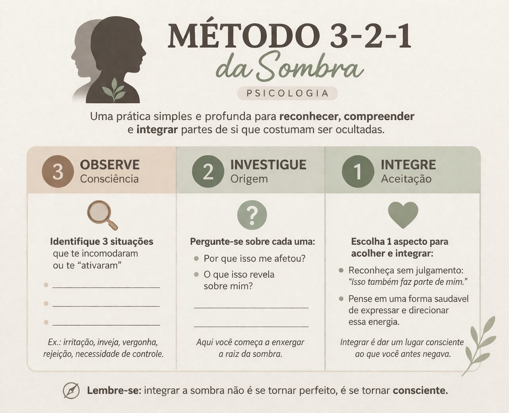

Autoconhecimento
O que é a “sombra” na psicologia e o método 3-2-1
Na psicologia junguiana, a sombra é a parte da nossa mente que contém:
- emoções reprimidas
- traços que negamos em nós mesmos
- impulsos que consideramos “negativos”
- aspectos da personalidade que evitamos mostrar
Exemplos:
- raiva reprimida
- inveja
- insegurança
- necessidade de controle
Não é algo “ruim”, mas é algo não reconhecido.
O que é o método 3-2-1 da sombra?
É uma forma simplificada de trabalhar a sombra com reflexão guiada em 3 etapas. Não é uma técnica formal única, mas uma adaptação prática usada em desenvolvimento pessoal.
Estrutura comum:
3. Observe (consciência)
Identifique:
- 3 emoções ou reações recentes que te incomodaram
- situações que te “ativaram”
Exemplos:
- fiquei irritado com alguém
- senti inveja
- me senti rejeitado
2. Investigue (origem)
Pergunte-se:
- Por que isso me afetou?
- O que isso revela sobre mim?
Aqui você começa a enxergar a sombra.
Exemplos:
- “Fiquei irritado porque também tenho esse comportamento”
- “Senti inveja porque desejo o que a pessoa tem”
1. Integre (aceitação)
- Aceite esse aspecto sem julgamento
- Pense em uma forma saudável de lidar com ele
Exemplo:
- “Ok, eu também tenho esse lado — como posso melhorar isso?”
Para que serve?
- Aumentar autoconhecimento
- Reduzir reações impulsivas
- Trabalhar emoções difíceis
- Desenvolver maturidade emocional
- Melhorar relacionamentos
Benefícios
- Mais clareza sobre seus comportamentos
- Menos julgamento (de si e dos outros)
- Melhor comunicação emocional
- Identificação de padrões repetitivos
- Mais equilíbrio interno
Importante
Esse tipo de prática:
- não substitui terapia
- pode trazer desconforto emocional (o que é normal)
- funciona melhor com acompanhamento profissional, se possível
Resumindo
O “3-2-1 da sombra” na psicologia é uma forma prática de: observar → entender → integrar partes ocultas de si mesmo
Exercício 321 da sombra
O que significa integrar?
Integrar é: “Isso também faz parte de mim e eu escolho como lidar com isso.”
Não é:
- ❌ reprimir (“não posso sentir isso”)
- ❌ explodir (“sou assim mesmo”)
É o meio:
- ✅ reconhecer + direcionar
Como integrar na prática (passo a passo)
1. Nomeie sem julgamento
Quando surgir algo (raiva, inveja, orgulho, etc):
Em vez de negar:
“Isso é feio, não devia sentir”
Diga:
“Eu estou sentindo inveja agora”
Só isso já começa a integração.
2. Entenda a função da emoção
Toda emoção tem uma intenção.
Pergunte:
- O que isso está tentando me mostrar?
- O que eu estou precisando?
Exemplo:
- inveja → desejo não atendido
- raiva → limite ultrapassado
- insegurança → medo de rejeição
3. Aceite sem se identificar totalmente
Aqui está o ponto-chave:
Você tem a emoção, mas não é a emoção.
Em vez de:
- “eu sou uma pessoa invejosa”
Use:
- “uma parte minha sente inveja”
Isso cria espaço interno.
4. Escolha uma resposta consciente
Agora sim vem o controle saudável.
Exemplo:
Raiva
- Reação automática: explodir
- Integração:
“Estou com raiva — preciso colocar um limite, mas com calma”
Inveja
- Reação automática: criticar o outro
- Integração:
“Eu também quero isso — o que posso fazer para chegar lá?”
Insegurança
- Reação automática: evitar
- Integração:
“Estou com medo, mas posso agir mesmo assim”
5. Dê um canal saudável
A sombra precisa de expressão — senão ela explode.
Formas de canalizar:
- escrever (journaling)
- exercício físico (raiva)
- conversar com alguém
- criar algo (arte, ideias)
- tomar pequenas ações práticas
Regra simples para lembrar =>> Reconhecer → Aceitar → Direcionar
Um erro comum
Muita gente acha que integrar é “virar uma pessoa perfeita”.
Na verdade é o contrário:
Você fica mais humano, mais consciente e menos reativo.
Exemplo real simples
Situação: Alguém te irrita no trabalho
Integração:
- “Estou com raiva”
- “Me senti desrespeitado”
- “Preciso me posicionar”
- Conversa firme, sem explodir
Resumo direto
Integrar a sombra é:
- ver o que você evita
- parar de negar
- usar isso com consciência
Referências
- Instituto Evoluir
- 3, 2, 1 da Sombra com Del Mar

Gostou desta matéria? Veja outras no blog, conheça nossas referências ou fale com a gente.